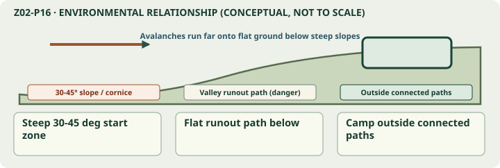

Z02-P16 · Shelter and housing · New manuscript
Screen slopes for avalanche terrain, cornices and runout zones
Exclude avalanche start zones, gullies and flat runout paths before selecting any winter rest stop or camp.
When it applies · Snow-covered hilly, bluff or mountain terrain during winter and spring thaw.
Equipment · Regional avalanche forecast where published, topographic slope map and winter navigation tools.

Actions
- Check official regional avalanche forecasts before travel and treat slopes roughly 30 to 45 degrees—and terrain directly beneath them—as avalanche hazard zones.[E23, E01]
- Look far upslope above flat valley bottoms and meadows; large slides travel well beyond steep ground into seemingly gentle runout paths and gullies.[E23]
- Avoid overhanging wind-sculpted snow cornices along ridge crests and stay clear of steep snow-loaded gullies or recent debris piles when stopping or camping.[E23, E03]
Failure recognition · Pitching a winter tent on a flat valley floor directly under an unassessed steep snow slope or overhanging cornice.[E23]
Verify · Confirm the site sits clear of steep upper slopes, overhead cornices and connected gully runout paths using both terrain inspection and map contours.[E23, ED]
Stop or change course · Without formal avalanche training, rescue gear and favorable current forecasts, exclude all avalanche slopes and runout zones completely.[E23]
Evidence and editorial notes
- E01 · Minnesota DNR · Safety in State Forests (current web edition)
- Section: Before your trip and while visiting · Conditions: State-forest travel and backcountry planning
Support: Know the route, check conditions, carry navigation and safety equipment and share trip details.
Limitations: Conditions and trail maintenance vary seasonally across forest units. · Conflicting evidence: None; aligns with NPS-H.
Editorial note: Foundation for trip planning and pre-departure risk checks. · Specialist reviewer: Land management and search and rescue
Primary source · checked 2026-11-24 - E03 · NPS · Finding and Setting Up a Campsite (current web edition)
- Section: Finding a campsite · Conditions: Legal established or designated campsite
Support: Choose a durable legal site suited to the conditions. Campsite rules and physical risks vary by park.
Limitations: Established sites can still develop new hazard trees or flood risk after storms. · Conflicting evidence: None; requires live site inspection even at designated pads.
Editorial note: First gate of shelter site selection. · Specialist reviewer: Land management and wilderness shelter
Primary source · checked 2026-11-24 - E23 · National Avalanche Center / USFS · Avalanche Encyclopedia (current web edition)
- Section: Avalanche Encyclopedia > Terrain, Slopes, and Runout Zones · Conditions: Winter travel and camping in snowy sloped or mountain terrain
Support: Avalanches can initiate on slopes roughly 30 to 45 degrees and travel far into flatter runout zones below; avoid camping beneath steep snow slopes, cornices, or gullies without formal avalanche training and current forecasts.
Limitations: Gentle flat valley floors can still sit inside runout paths beneath steeper upper slopes. · Conflicting evidence: None; strictly excludes unvalidated snow-shelter placement in avalanche terrain.
Editorial note: Enforces avalanche-terrain exclusion on all winter shelter cards. · Specialist reviewer: Avalanche safety and winter shelter
Primary source · checked 2026-11-24
Source lineage · National Avalanche Center and USFS avalanche guidance; new manuscript · Classification · New manuscript.